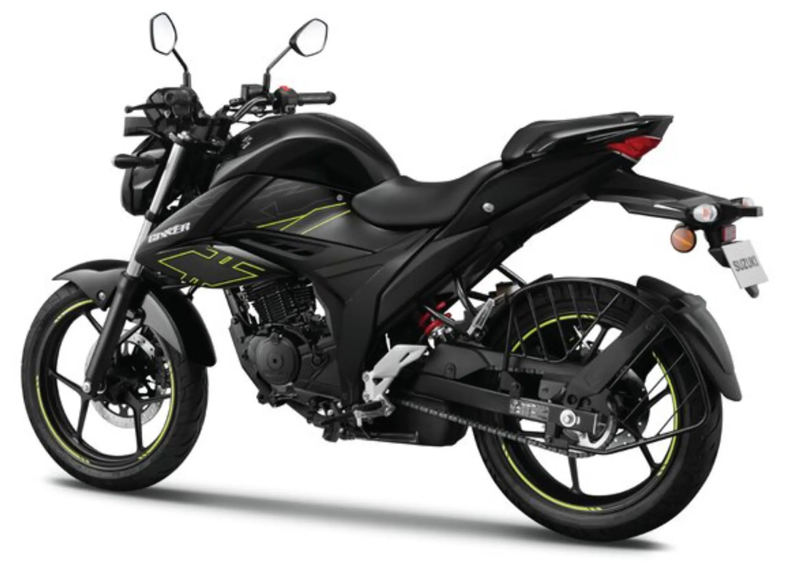

Suzuki Gixxer 150 vale a pena?

Conheça a Suzuki Gixxer 150
A Suzuki Gixxer 150 é uma moto street com proposta esportiva leve, voltada para quem busca um modelo econômico, moderno e com bom desempenho para o uso diário. Com design agressivo e linhas inspiradas em motos maiores, ela chama atenção visualmente.
Por isso, muitas pessoas pesquisam se a Suzuki Gixxer 150 vale a pena antes de comprar. O modelo tenta equilibrar desempenho, consumo e custo-benefício dentro da categoria das motos de baixa cilindrada.
A Gixxer 150 é uma opção interessante para quem quer sair das motos básicas e ter algo com mais estilo e presença.
Motor e desempenho
A Suzuki Gixxer 150 possui um motor de aproximadamente 150 cilindradas, que entrega um desempenho equilibrado para uso urbano.
A velocidade máxima pode chegar a cerca de 110 km/h, permitindo rodar com conforto tanto na cidade quanto em pequenas viagens.
O motor responde bem em acelerações e oferece uma pilotagem agradável para o dia a dia.
Consumo de combustível
Um dos pontos positivos da Gixxer 150 é o consumo. Em média, ela pode fazer entre 35 km/l e 40 km/l.
Isso a torna uma moto relativamente econômica, ideal para quem precisa utilizar diariamente.
Preço da Suzuki Gixxer 150
O preço da Suzuki Gixxer 150 pode variar conforme a região, mas geralmente fica na faixa de R$ 13.000 a R$ 16.000 quando disponível no mercado.
No mercado de usadas, os valores podem variar entre R$ 8.000 e R$ 12.000, dependendo do estado e do ano da moto.
Considerando o conjunto geral, o custo-benefício pode ser interessante para quem busca algo diferente das opções mais comuns.
Conforto e uso no dia a dia
A posição de pilotagem da Gixxer 150 é confortável, permitindo uso prolongado sem grande cansaço. O banco é razoável para trajetos urbanos.
A suspensão também é adequada para lidar com irregularidades comuns das ruas brasileiras.
Conclusão: Suzuki Gixxer 150 vale a pena?
De forma geral, a resposta é que a Suzuki Gixxer 150 vale a pena para quem busca uma moto com visual esportivo, bom desempenho e consumo equilibrado.
Ela não é a mais potente da categoria, mas entrega um conjunto interessante para uso urbano e pequenas viagens.
Para quem quer sair do básico e ter uma moto estilosa, pode ser uma ótima escolha.
Outras notícias
Suzuki Burgman 125 vale a pena?